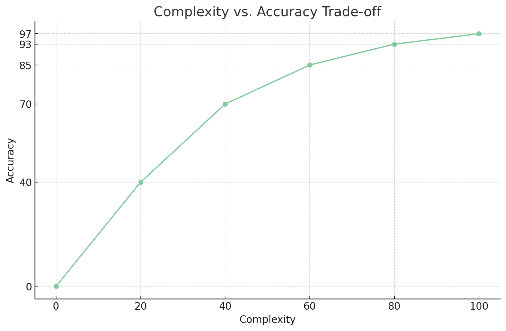
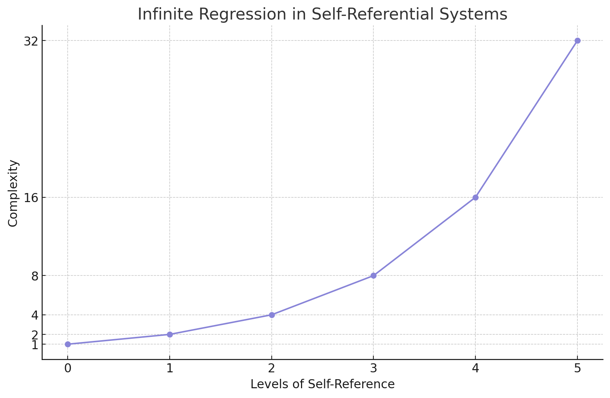
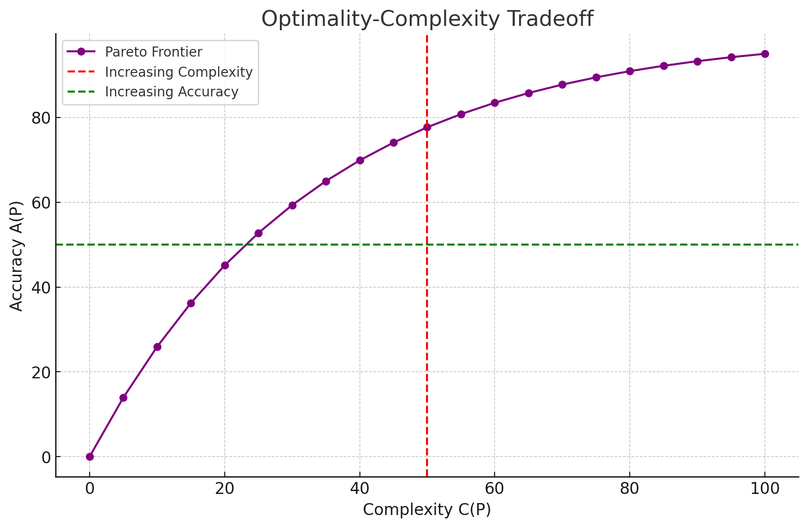
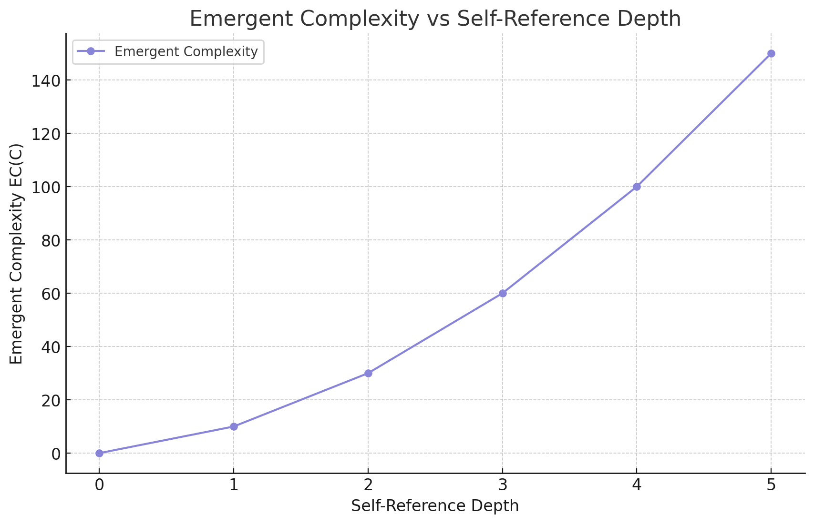
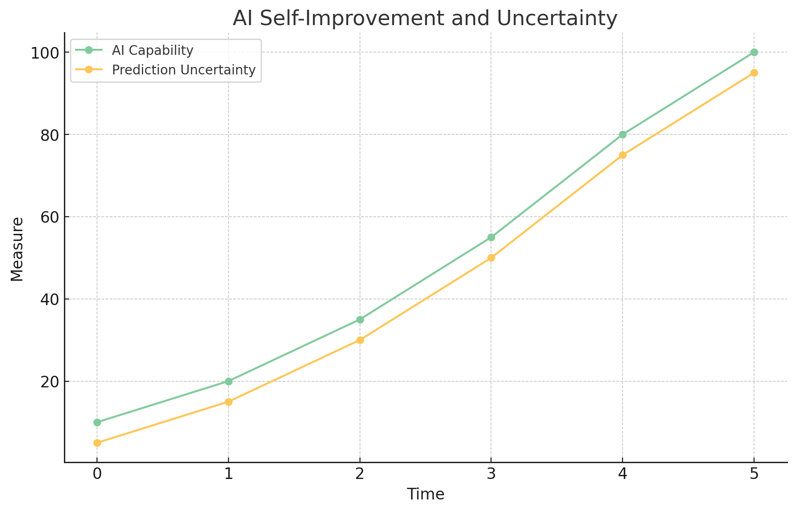

The Self-Referential Paradox of Accurate Prediction
Abstract
Build a predictor that is told what it will do, and it can be built to do otherwise. The Self-Referential Paradox of Accurate Prediction (SPAP) turns that observation into a theorem about classes of predictors. On any class rich enough to encode its own members, simulate them, evaluate a binary predicate on the result, negate it, and compose programs, and closed under the construction that feeds a predictor's forecast back to the system it forecasts, no predictor in the class is correct about every system the class can build. The probabilistic version closes the obvious escape: hedging with a number rather than a verdict fails on the same construction.
What the theorem denies is a universal predictor over a class. It leaves
particular systems perfectly predictable, and it does not make any
individual event random. Approaching the boundary is separately expensive:
on a stated quantitative branch, the verification and update work needed to
come within δ of the limit grows like
log(1/δ)/δ². A related structural result concerns
representation: no finite description can contain its own value as a
literal proper part, so unfolded self-description regresses, while a
description holding a code or a pointer does not. Together these give a
limit that is logical rather than technological, and a class of systems
that can improve their self-models without ever completing them.
SPAP in Plain Terms
A friend tells you, before you choose, which of two doors you will walk through. If you hear the answer, you can take the other one. The trick is not that your friend is a poor forecaster. It is that handing you the forecast makes it part of what you are deciding about, and you can always be the kind of person who does the opposite. Any machine built the same way defeats any predictor that has to be right about every such machine.
Notice what survives. Your friend can still predict people who are not told the prediction, and can still predict you about things you cannot change, like how tall you are. The limit falls on one specific ambition: a single forecaster that is right about every system in a family that includes the contrarian machines built from that very forecaster. That ambition is the one that fails, and it fails for a reason no faster computer removes.
Hedging does not rescue it. Suppose your friend refuses to name a door and gives a probability instead. Build the machine that reads the probability and takes the less likely door whenever the number leans one way. The forecast is wrong more often than chance, and the escape closes.
The other half of the result is about cost, and it is the useful half. Almost getting there is expensive in a way that can be measured: closing the last sliver of the gap to the boundary takes work that grows faster than the sliver shrinks. This is why self-knowledge behaves the way it does in practice. A person, a company, or a program can always learn more about itself, each step costs more than the one before, and the account never closes.
1. Introduction
Prediction is the working currency of physics, computer science, and cognitive science. It behaves strangely when the predictor is inside what it predicts. A system holding a model of itself is not simply a system with a larger model; it is a system whose model has to describe its own describing, and whose output can be routed back into its input.
The Self-Referential Paradox of Accurate Prediction names the resulting limit. The result is a diagonal theorem, in the family that runs from Cantor's argument through Gödel's (1931) incompleteness theorems and Turing's (1936) halting result, and its general form is Lawvere's (1969) fixed-point theorem, of which these are instances. What SPAP adds is the setting: the objects are predictors and the sentences are forecasts, so the fixed point that fails to exist is a forecast that must equal its own negation.
The claims come with their scope attached, because the interesting part of the result is what it leaves standing. Restricted systems remain predictable, hedged forecasts fail for the same reason unhedged ones do, and no randomness is derived anywhere.
Universe 00110000
2. The Setting
2.1 Systems, Predictors, and Forecasts
Fix a class M of coded objects. Members of M are both
systems, which evolve, and predictors, which output forecasts about
systems. Each system has a nominated component, a designated binary feature
of its next state that forecasts are about, written
φt+1 ∈ {0,1}. A predictor P applied to a
coded system S at time t returns a forecast
P(S,t) ∈ {0,1}, and P is correct on
S at t when P(S,t) = φt+1.
Restricting forecasts to one bit costs nothing. A predictor that gets a rich description right also gets every binary feature of it right, so an impossibility proved for one bit holds for anything richer.
2.2 Two Hypotheses on the Class
Two properties of M do the work, and both are assumptions about the
class rather than about any single system.
Computational richness. M can encode its
own members as objects it manipulates, simulate a member applied to
a state, evaluate a decidable binary predicate on the result, negate
a bit, and compose finitely many programs uniformly.
Uniform diagonal closure. For every predictor
P ∈ M, the class contains the system
D(P) that obtains its own code, queries P
for the forecast of its own nominated component, and sets that
component to the opposite of the answer.
Richness is what lets a system read a forecast about itself; Gödel numbering is the classical instance, and Kleene's (1938) recursion theorem is what lets a program obtain its own code. Diagonal closure is the substantive assumption, and it says the class is not artificially pruned to exclude contrarian machines. A class of systems that never receive forecasts about themselves fails it, and the theorem below does not apply to such a class.
2.3 Cost and Accuracy
Let A(P) be the accuracy of a predictor on a registered task,
measured as the negative of expected loss under a stated loss function, and
let C(P) be its cost, measured in whatever ledger the
implementation charges: description length, run time, memory, energy. A
predictor is selected by trading the two,
P* = arg min_P [ E[L(P(s, Δt), s')] + λ C(P) ]
with λ > 0 fixing the exchange rate. Nothing in the theorems
below depends on the particular ledger. What matters is that cost is
finite and that accuracy has to be bought.

Accuracy against the cost of the model. Each increment of structure buys less accuracy than the one before it, and the curve flattens without ever reaching the top of the frame.
3. The Theorems
3.1 The Deterministic Case
Theorem 1 (SPAP, deterministic form). Let
M be computationally rich and uniformly diagonal
closed. Then no Pf ∈ M is correct on every
system in M for its nominated component.
Proof. Suppose Pf is such a
predictor. By diagonal closure the class contains
Sdiag = D(Pf). Write
φ̂ = Pf(Sdiag, t) for the
forecast of its nominated component. By construction that component
takes the value
φ_{t+1} = NOT(φ̂)
Correctness on Sdiag requires
φ̂ = φt+1, so
φ̂ = NOT(φ̂). Neither 0 nor 1 satisfies this, so no
such Pf exists. ∎
The proof takes three lines because everything hard is in the hypotheses.
Richness lets Sdiag be built and lets it read the
forecast; closure puts it in the class; the negation supplies the
contradiction. Remove any one and the argument stops.
3.2 Hedging Does Not Help
The obvious repair is to let the predictor output a probability rather than a verdict. It fails, and it fails at the same step.
Theorem 2 (SPAP, probabilistic form). Let
M be a coded class with uniform diagonal closure for
probabilistic predictors, in which each predicted marginal
p has a finite representation making the predicate
p > 1/2 decidable inside the class, and which is
closed under forming the Bernoulli law selected by that predicate.
Then no predictor in M gives the exact marginal for
every system in M.
Proof. Suppose Pf is exact.
Closure supplies S′diag ∈ M which obtains
its own code, computes
p = Pf(φt+1 = 1 | S′diag,
t), and adopts the one-step law
P_actual(φ_{t+1} = 1) = 0 if p > 1/2, 1 if p ≤ 1/2
Exactness requires p = Pactual(φt+1 =
1). If p > 1/2 then the right side is
0, contradicting p > 1/2. If p ≤ 1/2
then the right side is 1, contradicting p ≤ 1/2. ∎
The threshold rule is what makes the construction work: the system needs to read only which side of one half the forecast falls on, which the decidability hypothesis grants. A predictor that answers exactly one half every time escapes this particular system and is useless, since it is exact for no system whose component is not a fair coin.
3.3 The General Shape
Both proofs are instances of one fixed-point argument. Lawvere (1969) showed
that if a structure admits a map eval: A × A → Out through
which every function from A to Out is named by
some element of A, then every function from Out
to itself has a fixed point. Contrapositively, an operation on outcomes
with no fixed point rules out that naming. Negation on {0,1}
has no fixed point, so a class whose predictors name all the forecast
functions on it cannot exist. Cantor's diagonal, Gödel's undecidable
sentence, Turing's halting argument, and Theorem 1 are the same move applied
to different categories, as Yanofsky (2003) sets out in detail.
The reading that follows is worth stating plainly, because much of what is claimed for such theorems does not follow from them. What fails is a naming: the class cannot contain a predictor that correctly names the forecast function for all of its own members. Nothing is said about any particular system, and nothing is said about how the world behaves.
3.4 Regress, and Why It Is a Claim About Representation
A second argument is often run alongside the diagonal one. A self-referential system is written as
S(t) = (x(t), M(S(t)))where x(t) is everything other than the self-model and
M maps the state to the system's model of it. Substituting the
left side into the right gives
S(t) = (x(t), M((x(t), M((x(t), M(…))))))with no innermost term. The conclusion usually drawn is that complete self-description is impossible. The conclusion is right under a condition that has to be named, and the condition is about representation.
Unfolded representation. A description is unfolded, or extensional, for a component when it literally contains that component's value as a proper part, and not a pointer, index, address, or code that must be interpreted to recover it.
Theorem 3 (No proper self-containment). Let
R be a class of finite, acyclic descriptions with a
proper-part relation ≺ and a size measure
μ satisfying r′ ≺ r ⇒ μ(r′) < μ(r).
Then no r ∈ R satisfies r ≺ r, and there
is no infinite descending chain
r0 ≻ r1 ≻ r2 ≻ ….
Hence no unfolded description contains its own value as a proper
part.
Proof. If r ≺ r then
μ(r) < μ(r), which no natural number satisfies. An
infinite descending chain would give an infinite strictly
decreasing sequence of natural numbers, which does not exist. ∎
So the regress is real, and it is a fact about unfolded descriptions rather than about self-reference in general. A system that stores a code for its own model, in the way a program stores its own source, has no regress at all, and Kleene's (1938) recursion theorem shows that such storage is always available in a rich enough class. This matters for what the limit rests on: the diagonal argument of Theorem 1 works against coded self-models too, and it is the argument that carries the weight. Regress rules out one way of laying out a self-description; diagonalization rules out the goal.

The size of an unfolded self-description against the depth to which the self-model is expanded. Each level of nesting adds the whole of the level below it, so the size grows without bound and no finite depth completes the description.
3.5 The Cost of Getting Close
Exact self-prediction is unavailable across a class. Approximate self-prediction
is available, improves with effort, and gets expensive in a way that can be
stated. Write α for the performance a system achieves on a
registered task, αSPAP for the boundary its class
cannot pass, and δ = αSPAP − α for the remaining
gap.
Theorem 4 (Divergence near the boundary). On the
quantitative branch, given a certificate that reduces the task to a
hard family and fixes the counting of operations, the number of
verification and update operations required to close the gap to
δ satisfies
C_uni(δ) = Ω( log(1/δ) / δ² )
The same asymptotic bound transfers to a predictive-complexity measure whenever that measure lower-bounds the operations being counted.
The form is familiar from statistics: telling two hypotheses apart when they
differ by δ takes on the order of 1/δ² samples,
and the logarithm is the price of confidence. Reading the bound in practical
terms, halving the remaining gap costs more than four times the work, so
each stage of self-improvement is dearer than the last while the boundary
stays where it is. The certificate is part of the statement; without it the
numerical boundary αSPAP is undefined and the bound
has nothing to attach to.
The trade-off this creates has no optimum. Accuracy rises with cost, the returns
diminish, and no setting of the exchange rate λ maximizes
accuracy while minimizing cost at once. What exists is a frontier of
efficient pairs, and a choice of where on it to sit.

The frontier of achievable pairs of accuracy and cost. Points below the curve are wasteful, points above it are unavailable, and moving along it trades one quantity for the other.
4. What SPAP Does Not Say
Four readings are excluded by the statements above. Each has been drawn from results of this kind, and none follows.
- No system is predictable. The theorem denies a universal predictor over a class. A pendulum is perfectly predictable; so is any system that does not receive forecasts about itself; so is a rich system on tasks it cannot act against. The quantifier is over the class, and it stays there.
- Events are random. Nothing in the argument makes any individual outcome stochastic. The obstruction is a fact about which predictors can exist, and a world of this kind can be entirely deterministic. Where physical theory introduces chance, it does so on separate assumptions about dynamics.
- Enough computation would fix it. The contradiction is
in the arithmetic of
{0,1}. No speed, memory, or parallelism changes the fact that no bit equals its own negation. - The boundary has a known numerical value.
αSPAPis a symbol until a task, a performance measure, an admissible class, and a certificate are fixed. Theorems 1 and 2 need no such number; Theorem 4 does.
Related classical results respect the same boundaries. Popper (1950) and MacKay (1960) argued that a predictor cannot supply a prediction to an agent who can act against it, and Scriven (1965) drew the consequence for human behavior. Grunberg and Modigliani (1954) and Simon (1954) showed the other side: when a prediction is published into a system that reacts to it continuously, a fixed point can exist, and a self-fulfilling forecast is available even though a self-defeating one is not. The difference is the reaction function, and the contrarian construction is exactly the case with no fixed point.
5. Systems That Model Themselves
A system with a self-model, an expectation about its own next state, and a comparison that revises the model is inside the scope of Theorem 1 provided its class satisfies the two hypotheses. Three consequences follow for such systems, and they are consequences about self-models rather than about experience.
- The self-model is always a compression. Complete unfolded self-description is unavailable by Theorem 3, so what a system holds about itself is a summary that leaves parts out.
- There is a residue of self-uncertainty that does not go to zero. Write
H(S(t+Δt) | P(S(t), Δt))for the uncertainty about the next state given the system's own forecast. Since no predictor in the class is exact across the class, this quantity stays positive for the systems the class builds against it. - Improving the self-model does not close the gap. By Theorem 4 the remaining gap gets more expensive as it narrows, which is what sustained self-inquiry looks like from inside.

Residual uncertainty about the next state, given the system's own forecast of it, plotted against the depth of self-modeling. The residue shrinks and stays positive.
SPAP sits alongside the main structural accounts of self-modelling minds. Metzinger (2003) argues that experience involves a model of the self that the system cannot recognize as a model, and Hofstadter (1979, 2007) treats the loop of self-reference as the central feature of mind. SPAP supplies the formal constraint both pictures need, fixing what any self- modeling system can compute about itself. Penrose (1989, 1994) argued from Gödel's theorems that human understanding exceeds computation, an argument that turns on a premise about human soundness. SPAP reaches its result without that premise.
6. Knowledge and Inquiry
Read as a claim about knowledge, the theorem says that a complete and certified account of a domain that includes the account-giver is unavailable from inside that domain. It does not say the account is worthless, and the distinction is the point.
Scientific practice already runs this way. Theories are revised, and revision is the normal condition rather than a symptom of failure. A framework that includes its own users among the systems it describes is subject to Theorem 1 whenever those users can act on what it says, which is the case wherever a published theory changes behavior. Economics is the clear example, and Grunberg and Modigliani (1954) showed both the difficulty and the conditions under which a stable published forecast survives.
Induction is left where it was found. Hume's problem is that past regularity does not entail future regularity, and SPAP adds a different limitation: even granting regularities, a predictor inside the system cannot be exact about every system its own class can build. The two limits are independent, and neither implies the other.
7. Artificial Systems
An artificial system that reads its own code, forecasts its own behavior, and modifies itself is precisely the setting the hypotheses describe, so the consequences apply directly.

Capability and self-prediction uncertainty over time for a system that modifies itself. Both rise together, because each improvement changes the system the forecast was about.
- Self-improvement is bounded in accuracy. A system can improve its self-model, and by Theorem 4 each further step costs more, so unbounded acceleration of self-prediction is unavailable even where capability grows.
- Long-horizon self-forecasts degrade. Each self-modification changes the system the forecast was about. The forecast is made by a system that no longer exists when the horizon arrives.
- Certainty about future alignment is unavailable from inside. Verifying that a system will hold a property after it modifies itself is a self-prediction task in the class, so a proof of that kind cannot come from the system alone.
- Approximation is the design target. Since exactness is excluded and closeness is costly, safety work is bounded-risk work: monitoring, containment, and margins rather than certified self-knowledge.
An external verifier is not a way around the theorem, and it is not useless either. A verifier outside the system's class can be exact about that system, which is why external audit is worth more than introspection. What the theorem forbids is a verifier inside the class that handles every system the class can build, including the ones built to defeat it.
Universe 00110000
9. Conclusion
Feed a predictor's forecast to the system it forecasts, and let the system act against the answer. No predictor in a class rich enough to build that system is correct across its own class, whether it answers with a verdict or with a probability. That is the whole of SPAP, and it is a theorem about classes rather than about any particular system.
Three things travel with it. Unfolded self-description fails for a separate and
simpler reason, that no finite description contains itself as a proper part,
while coded self-description is available and still subject to the diagonal.
Approaching the boundary costs work that grows like
log(1/δ)/δ² on a certified branch, so accuracy is purchasable
and never complete. And the limit is logical, so it is untouched by better
hardware and unrelated to randomness in the world.
What remains available is the useful part. Systems that model themselves can improve, can be audited from outside, and can be designed for margins rather than for certainty. The gap that Theorem 1 opens is not a defect to be engineered away. It is the space in which prediction stays worth doing.
References
- Breuer, Thomas. "The Impossibility of Accurate State Self-Measurements." Philosophy of Science 62, no. 2, 1995, 197–214.
- Conant, Roger C., and W. Ross Ashby. "Every Good Regulator of a System Must Be a Model of That System." International Journal of Systems Science 1, no. 2, 1970, 89–97.
- Gödel, Kurt. "Über formal unentscheidbare Sätze der Principia Mathematica und verwandter Systeme I." Monatshefte für Mathematik und Physik 38, 1931, 173–198.
- Goodhart, C. A. E. "Problems of Monetary Management: The U.K. Experience." In Monetary Theory and Practice: The UK Experience, Macmillan, 1984, 91–121.
- Grunberg, Emile, and Franco Modigliani. "The Predictability of Social Events." Journal of Political Economy 62, no. 6, 1954, 465–478.
- Hofstadter, Douglas R. Gödel, Escher, Bach: An Eternal Golden Braid. Basic Books, 1979.
- Hofstadter, Douglas R. I Am a Strange Loop. Basic Books, 2007.
- Kleene, S. C. "On Notation for Ordinal Numbers." The Journal of Symbolic Logic 3, no. 4, 1938, 150–155.
- Lawvere, F. William. "Diagonal Arguments and Cartesian Closed Categories." In Category Theory, Homology Theory and Their Applications II, Lecture Notes in Mathematics 92, Springer, 1969, 134–145.
- MacKay, D. M. "On the Logical Indeterminacy of a Free Choice." Mind 69, no. 273, 1960, 31–40.
- Metzinger, Thomas. Being No One: The Self-Model Theory of Subjectivity. MIT Press, 2003.
- Nozick, Robert. "Newcomb's Problem and Two Principles of Choice." In Essays in Honor of Carl G. Hempel, edited by Nicholas Rescher, Reidel, 1969, 114–146.
- Penrose, Roger. The Emperor's New Mind. Oxford University Press, 1989.
- Penrose, Roger. Shadows of the Mind. Oxford University Press, 1994.
- Popper, Karl R. "Indeterminism in Quantum Physics and in Classical Physics." The British Journal for the Philosophy of Science 1, no. 2, 1950, 117–133, and no. 3, 173–195.
- Rice, H. G. "Classes of Recursively Enumerable Sets and Their Decision Problems." Transactions of the American Mathematical Society 74, no. 2, 1953, 358–366.
- Scriven, Michael. "An Essential Unpredictability in Human Behavior." In Scientific Psychology: Principles and Approaches, edited by Benjamin B. Wolman and Ernest Nagel, Basic Books, 1965, 411–425.
- Simon, Herbert A. "Bandwagon and Underdog Effects and the Possibility of Election Predictions." Public Opinion Quarterly 18, no. 3, 1954, 245–253.
- Strathern, Marilyn. "'Improving Ratings': Audit in the British University System." European Review 5, no. 3, 1997, 305–321.
- Turing, A. M. "On Computable Numbers, with an Application to the Entscheidungsproblem." Proceedings of the London Mathematical Society s2-42, no. 1, 1936, 230–265.
- Wolpert, David H. "Physical Limits of Inference." Physica D 237, no. 9, 2008, 1257–1281.
- Yanofsky, Noson S. "A Universal Approach to Self-Referential Paradoxes, Incompleteness and Fixed Points." The Bulletin of Symbolic Logic 9, no. 3, 2003, 362–386.